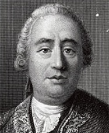

İskoçya’da doğan David Hume (1711-1776), gençliğinde Kalvinizm ile bağını kopararak ahlâk ve din üzerine tartışmalara yol açan görüşler geliştirdi. Bir radikal olarak kazandığı şöhreti, onu bir üniversitede iş bulmaktan alıkoydu. Onun yerine Hume, diğer pek çok şeyin yanı sıra bir memur, bir kütüphaneci ve sonraları bir diplomat olarak çeşitli işlere girdi. Jean-Jacques Rousseau ve Denis Diderot ile tanıştığı Paris’in salonlarında zaman geçirdi. Hume, 1776’da öldü; en tartışmalı eseri olan Doğal Din Üzerine Diyaloglar, ölümünden sonra yayınlandı.

Hume’un felsefesi, deneyciliği (empirizm) ve şüpheciliği ile tanınıyordu. Hume, bilgimizin ve fikirlerimizin tümünün deneyimle başladığına inandı. Bazı deneyimlerin her felsefî kavramı haklı çıkardığını öne sürdü. Ve sadece dinî inancın yazılarını değil, aynı zamanda yaygın felsefî varsayımları da gözden düşürmek için kayda değer bir çaba sergiledi. En ünlü ve etkili girişimi, bizi gerçek inançlara götürecek tümevarımsal akıl yürütmeye (tümevarım) güvenebileceğimiz fikrine saldırışıydı.
Ahlâk felsefesi dalında Hume, inançların değil sadece arzuların insanoğlunu harekete geçmeye teşvik edeceğine inandı. Ama ahlâk ilkelerinin davranışlarımızı sürüklediğini de gözlemledi. Bu nedenle, bu ilkelerin inançlarımıza değil arzularımıza hitap etmesi gerektiği sonucuna vardı. Diğer bir deyişle, Hume ahlâkî yargılarımızın dünyanın nesnel özelliklerini ifade etmediğini, sadece tercihlerimizi kayıt altına aldığını savundu. Hepimizin belli eylemlerden hoşlanmamamıza ve diğerlerini onaylamamıza neden olan doğal ahlâkî bir duyarlılığa sahip olduğumuza inandı. Ahlaki yargılarda bulunduğumuzda, onayımızı veya kınamamızı ifade ederiz ve bundan daha yüce bir şey yoktur.
EK BİLGİLER:
1. Ölümünden sonra basılan “Doğal Din Üzerine Diyaloglar” adlı eserinde Hume, geleneksel dinî inançlara dair çeşitli yazıları, özellikle Tanrı’nın dünyayı tasarladığı görüşünü eleştirdi.
2. Arzuların rasyonel olarak değerlendirilemeyeceği görüşünü ifade etmek için Hume “Tüm dünyanın yıkımını, parmağımın kaşınmasına tercih etmek akla aykırı değildir.” diye yazdı.